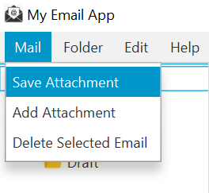
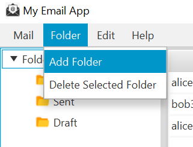
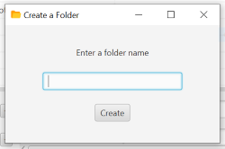
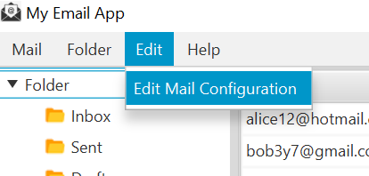
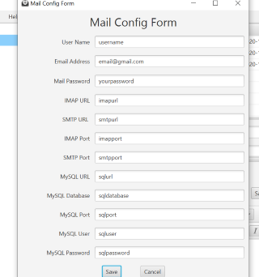
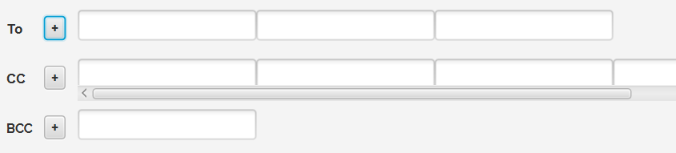

Mail Menu
Inside the Mail menu, you can add and save an attachment or delete an email.

Folder Menu
Inside the Folder menu, you can add or delete a folder. If you want to add a folder, the folder name mus not already exist or left empty.
You can also only delete a folder if a folder has been selected and that it is not part of the default folders (Sent, Inbox, Draft).

Edit Menu
Inside the Edit menu, you can edit the mail configuration form.

Adding Recipients
You can add more recipients in your email by clicking on the + button.
